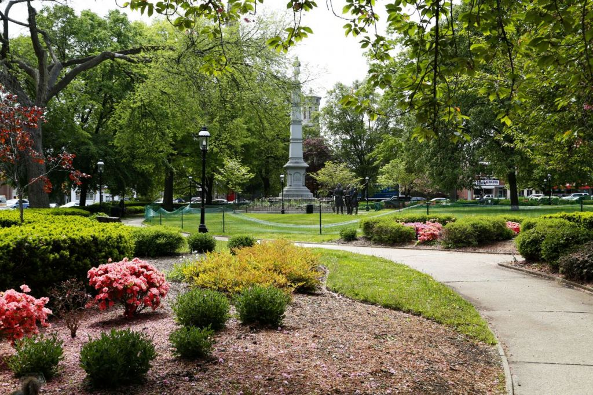

Morristown
Morristown wikipedia
Location: Morris County (North Jersey)
Morristown is a large town known for its historical sites and downtown. The Morristown National Historical Park includes sites from the Revolutionary War like Washington's Headquarters. Their downtown has a vibrant nightlife with plenty of good restaurants and bars.
Some highlights:
- Washington's Headquarters Museum

- Laundromat Speakeasy